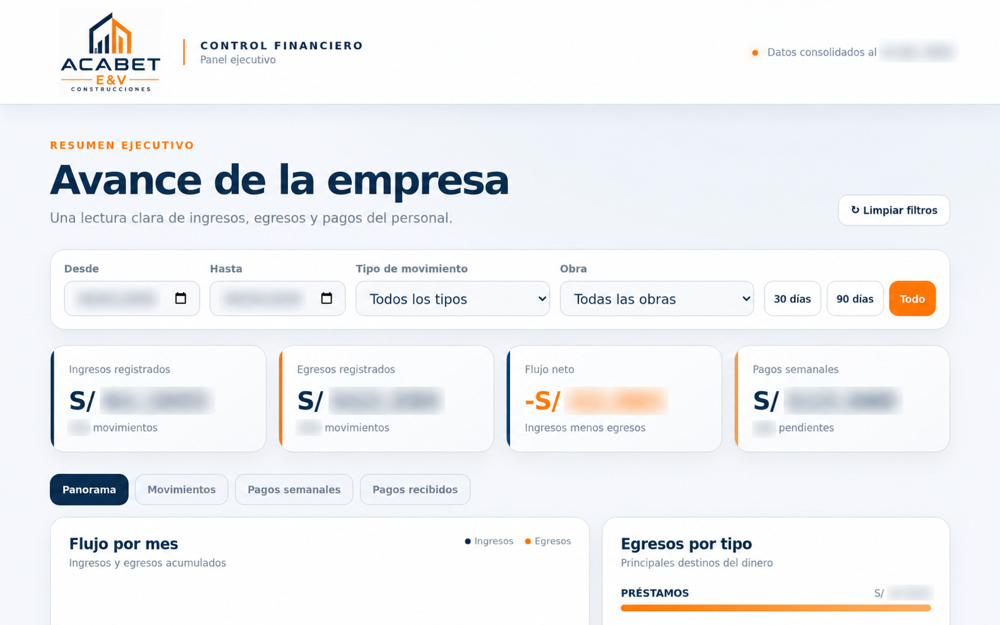

Control Financiero ACABET
Una herramienta creada para transformar información dispersa y procesos administrativos en una vista centralizada, visual y fácil de interpretar.

Información financiera protegidaDe procesos burocráticos a información visible.
El desafío
La información financiera no estaba consolidada en una herramienta digital y su lectura dependía de procesos manuales. Esto dificultaba interpretar ingresos, egresos, pagos y el comportamiento del flujo de caja.
La solución
Se desarrolló un dashboard conectado a Google Sheets, con filtros por rango de fechas, tipo de movimiento y obra. La vista ejecutiva organiza indicadores, movimientos, pagos y tendencias sin alterar el proceso de actualización de la información.
La empresa obtuvo una fuente visual para realizar seguimiento, detectar desviaciones y entender su situación financiera con mayor rapidez.
Proceso de trabajo
Identificación de fuentes, tareas manuales y necesidades de seguimiento.
Organización de movimientos, pagos y criterios de clasificación.
Diseño de indicadores, filtros y gráficos para lectura ejecutiva.
Conexión dinámica para incorporar nuevos registros al control.
¿Tu información sigue dispersa?
Podemos convertir hojas y tareas manuales en una herramienta clara de seguimiento.